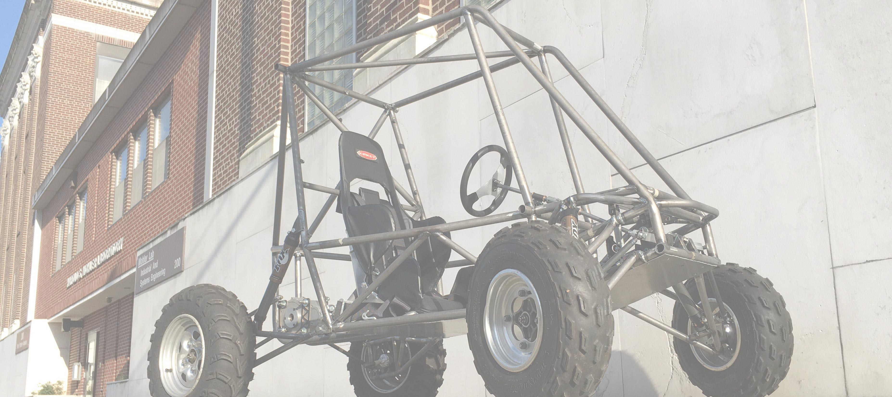
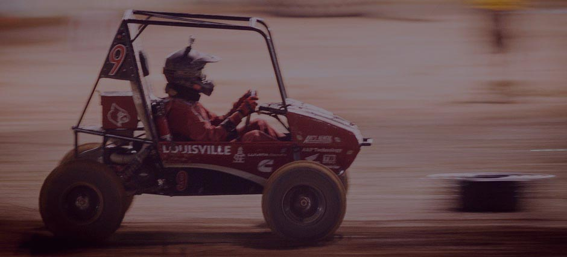

Design
Build
Compete
This is
NYU Tandon Motorsports
NYU is and always has been at the forefront of innovation and this is the standard we are maintaining with NYU Tandon Motorsports. From the start of this endeavor, we have utilized advanced materials and innovative techniques of fabrication in order to create the best possible vehicle. Even with these cutting-edge technologies we have made sure to work through multiple iterations to maximize utility and design. With this as our inaugural year, we are also given a distinct ability to create our design without the restraints of past exhibitions.
NYU Tandon Motorsports is a vehicle for change.
From the start we have been an inclusive engineering organization focused on creating an offroad vehicle, but with additional interests from students, faculty, and sponsors, allow us to be a social mentor. As a team we have attended Women in Engineering events, STEM in education, and internal open houses in order to increase interest in the sciences and engineering through our project. Moving forward we will continue to remain steadfast in our endeavor of creating social change.
